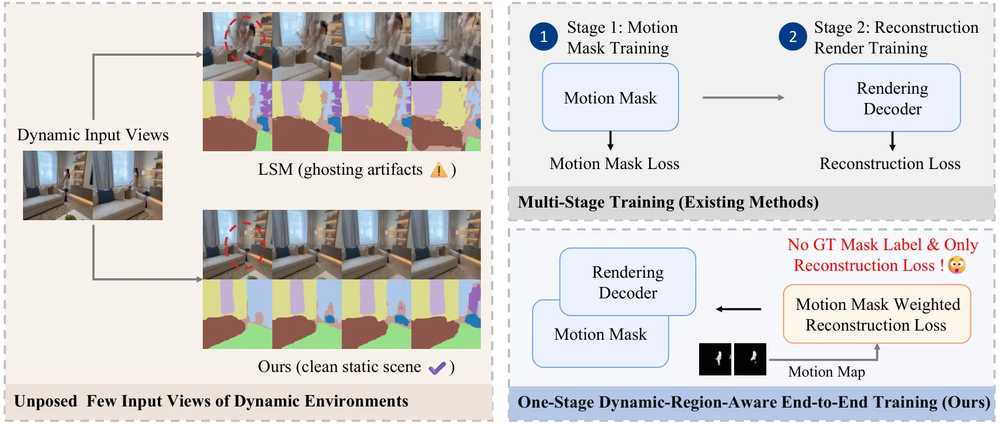
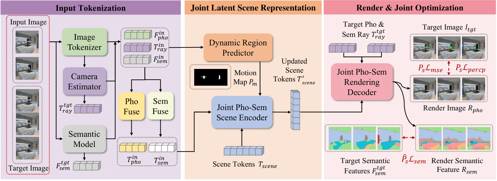
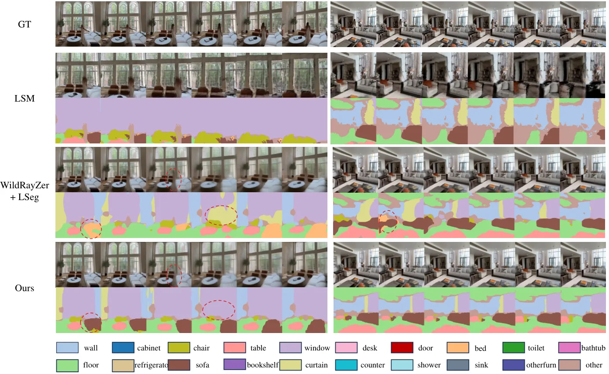
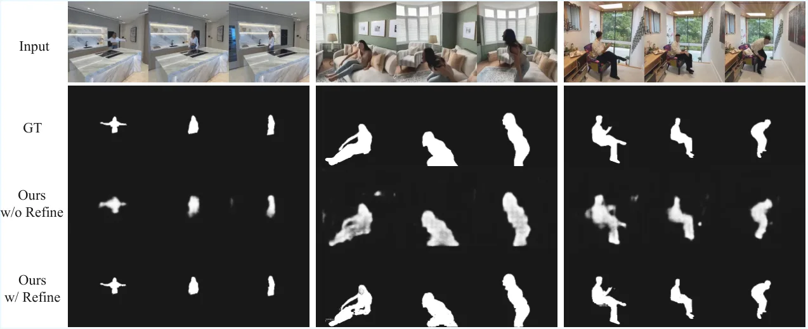
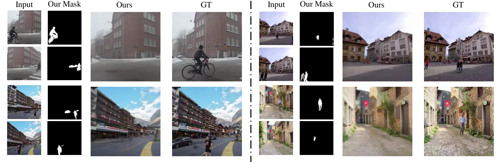

SPAR：面向开放词汇三维场景理解的动态鲁棒光度—语义重建
Dynamic-Robust Photometric-Semantic Reconstruction for Open-Vocabulary 3D Scene Understanding
把动态区域检测从外部预处理提升为重建系统内部的自监督几何—语义协同机制。
作者、单位与技术谱系 · Research context
作者与单位
作者单位和联合工作只采用论文署名/脚注；技术脉络是基于相关工作做的来源解读，未补写导师或实验室隶属关系。
方法本质拆解 · What actually changed
训练
使用动态区域感知联合损失和 copy-paste 增强。模型不依赖真实运动掩码训练标签。
约束
动态概率图同时加权光度与语义监督，使静态区域成为主要几何证据。全动态惩罚避免模型把整幅图错误判为动态的退化解。
推理
从少量无位姿视图输出 RGB、语义特征和掩码。SAM2 仅可选用于测试时细化。
机制
先识别跨视角运动冲突，再过滤动态 token。联合语义表示反过来稳定几何。
方法本质：结构化训练、观测约束、推理流程和可靠性机制共同决定结果，不能把单一模块的增益误认为完整方法效果。

动机与问题Motivation
动机与问题
多数前馈三维基础模型默认所有输入视图属于同一个静态场景，移动人、宠物和车辆会把互相冲突的几何与语义写入同一表示。问题不仅是 RGB 出现 ghosting，也包括跨视角语义错位和运动区域监督污染。
方法Method
方法总览
模型将 RGB token、预训练二维语义 token 和 Plücker ray token 输入 Cross-View Dynamic Region Predictor，得到动态概率图。经过掩码后的光度和语义 token 被联合编码成 scene token，双头解码器再预测目标视图 RGB 与连续语义特征。
关键技术细节
CV-DRP 对成对视图的光度、语义和射线特征做 Transformer 跨视角建模，并以静态概率图同时加权光度损失和语义 cosine 损失。训练还使用 copy-paste 动态增强、全动态预测惩罚和可选的测试时 SAM2 refine；语义特征对齐 LSeg/CLIP，而不是固定类别 logits。

实验Experiments
实验设置
训练使用 RealEstate、动态 D-RE10K 和 ScanNet；D-RE10K 包含 74 个互联网采集的室内动态序列，ScanNet 评估 40 个未见场景。动态 NVS 使用 2/3/4 个输入视图和 6/5/4 个目标视图，指标为 masked PSNR、SSIM、LPIPS、运动 mIoU/Recall；对照包括 WildRayZer、RayZer、LSM、SIU3R、3DGS 和 NeRF-on-the-go。
实验数字与比较
D-RE10K 上，3 个输入视图时 SPAR 的 PSNR/SSIM/LPIPS 为 22.15 dB/0.702/0.283，优于 WildRayZer 的 21.98/0.754/0.314；4 个输入视图时为 23.33 dB/0.739/0.263。3 视图运动掩码 mIoU 为 88.5%、Recall 为 86.2%，而自监督 WildRayZer 为 52.1%/84.3%；ScanNet 联合渲染 mIoU/Accuracy 为 0.5271/0.8061，数据均来自官方 HTML 表 1–3。
消融/失败边界
D-RE10K 的 2 视图设置中，去掉动态区域感知优化后 PSNR 从 19.97 降到 15.66 dB，SSIM 从 0.627 降到 0.489；仅随机掩码只能达到 17.10 dB。去掉语义分支后 PSNR/SSIM/LPIPS 由 19.97/0.627/0.339 变为 19.77/0.615/0.356，去掉预训练的下降更大，达到 18.66 dB；2 视图下原始 WildRayZer 仍有优势，说明极少输入和复杂遮挡是边界。
局限与迁移Limitations & Transfer
局限与待核验
作者明确承认系统依赖预训练二维语义模型和动态区域预测质量，且测试时 SAM2 refine 是可选的额外组件；语义质量也可能受中间表示压缩影响。待核验项包括室外长序列的定量结果、没有 SAM2 时的实际部署代价，以及 motion mask 误检对下游定位和建图的影响。
与你研究路线的关系
可迁移模块是将跨视角不一致性转成空间置信权重，并把语义一致性作为几何优化的辅助观测。下一步可把动态概率图接入因子图或神经 BA 的鲁棒核，比较硬掩码、连续权重和显式不确定性在动态遮挡、回环和故障恢复中的效果。
{kind=link}

{kind=link}

{kind=link}
